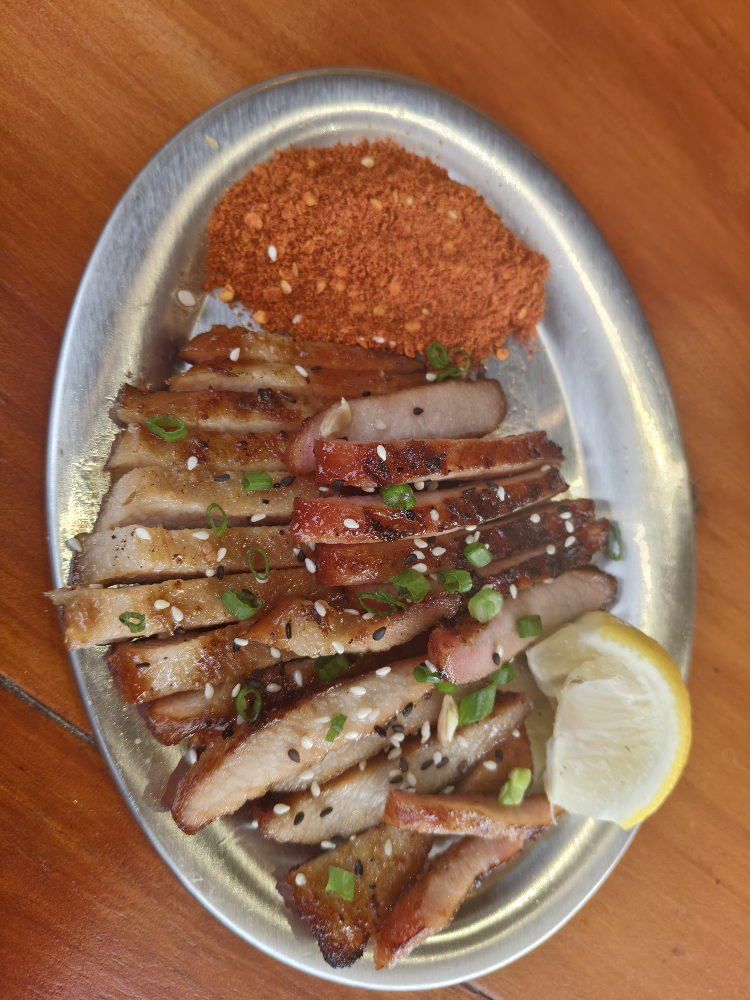
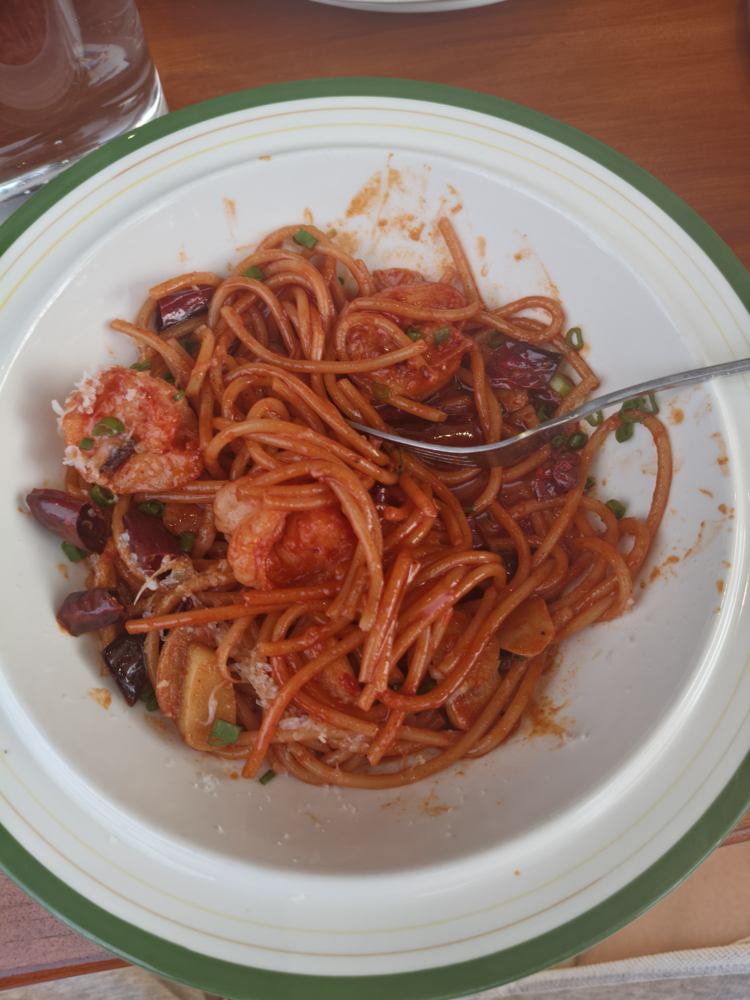
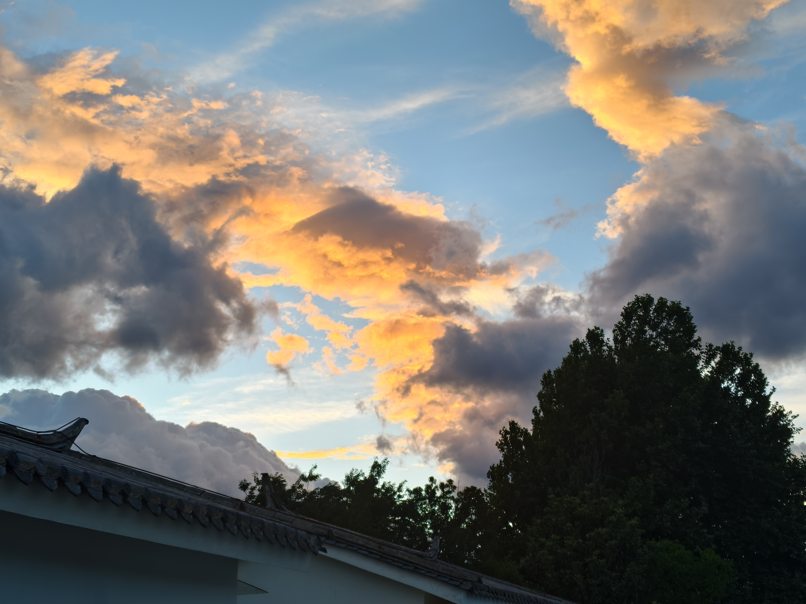
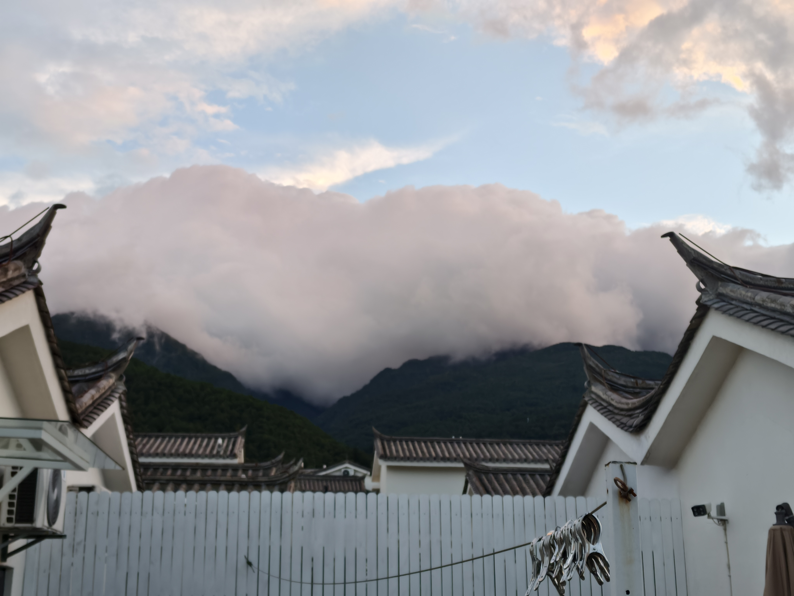
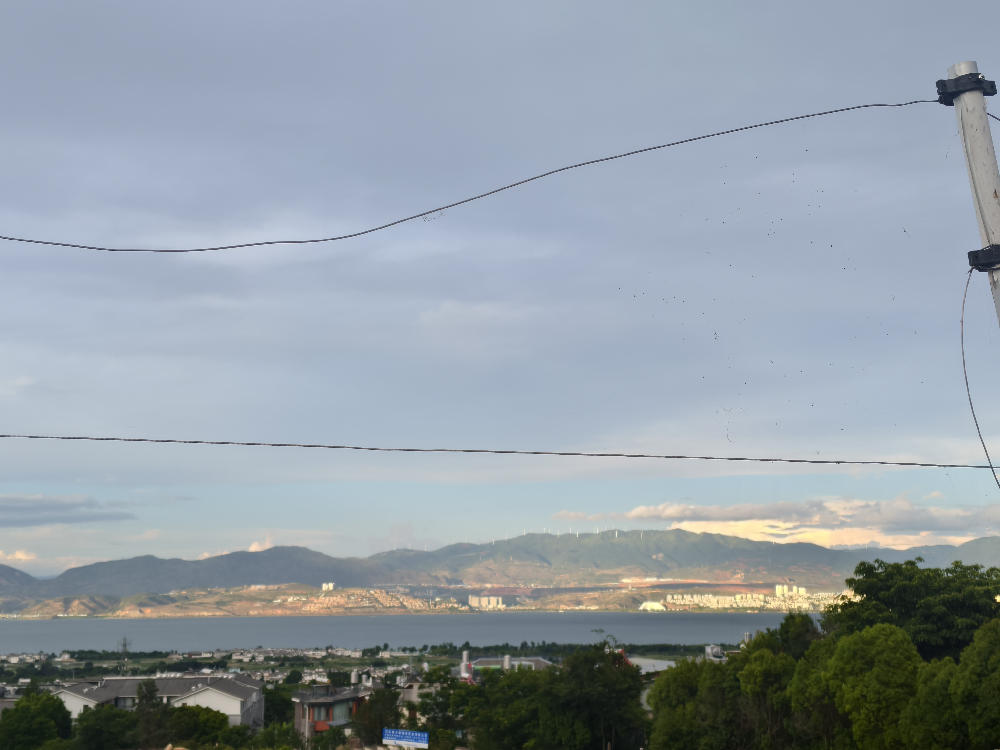

借了屋主三本书：
- 《美食寻云南味》
- 《我的阿勒泰》
- 《天真的幽默家》- 老舍散文集
因为"幽默"一词我感兴趣，所以便拿起来读了大概读了30多页，6-7篇散文。
老舍先生的济南打车趣事：到了济南然后挑选马车，结果因为费用贵被车夫连人带行李丢出车...
老舍先生描写济南的葱：济南的葱带有的汁水如"古代希腊女神乳房，鲜，白，含着滋养生命的乳浆"...
借了屋主三本书：
因为"幽默"一词我感兴趣，所以便拿起来读了大概读了30多页，6-7篇散文。
老舍先生的济南打车趣事：到了济南然后挑选马车，结果因为费用贵被车夫连人带行李丢出车...
老舍先生描写济南的葱：济南的葱带有的汁水如"古代希腊女神乳房，鲜，白，含着滋养生命的乳浆"...
来大理已经超过1个月，因为养伤嘛，骑车摔了两次，差不多一半的时间都是在房间躺着...
上帝把春天的艺术赐给了西湖，秋天和冬天全赐给了济南；而夏天，应该是赐给了大理...




